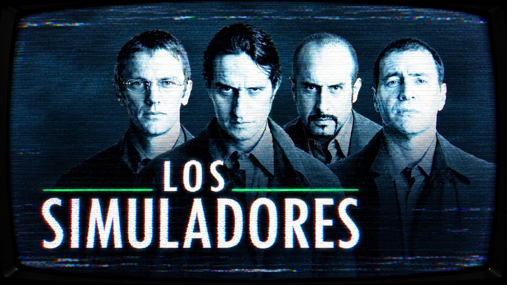
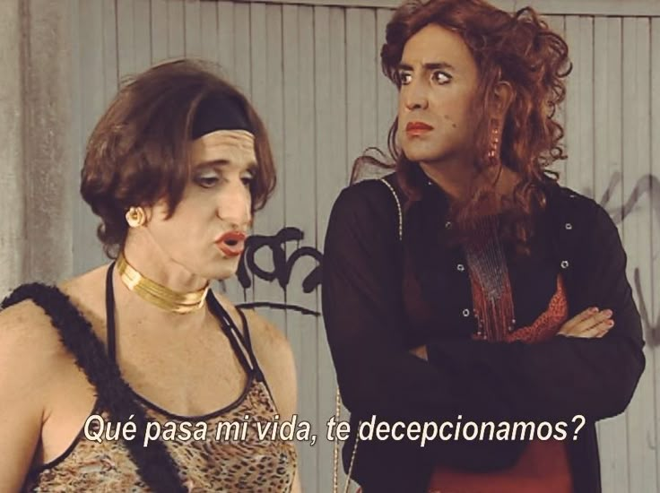
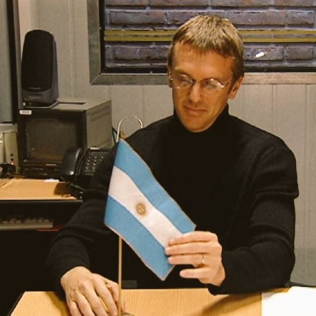

En esta sección podrás encontrar información sobre las temporadas de la serie "Los Simuladores".
La aclamada serie argentina cuenta con dos temporadas inolvidables emitidas originalmente entre los años 2002 y 2004. En la primera entrega se presentan trece episodios llenos de ingenio donde el equipo resuelve complejos problemas cotidianos . La segunda tanda cierra la historia con once capítulos que consolidaron el estatus de culto de la producción. En total, veinticuatro misiones magistrales bastaron para dejar una huella imborrable en la televisión hispana.
Link para ver los capítulos
La primera temporada de Los Simuladores (2002) sigue a un grupo de cuatro especialistas que resuelven problemas imposibles mediante elaborados operativos de engaño, inteligencia y actuación. Cada episodio presenta un caso distinto, desde conflictos familiares hasta estafas y situaciones de corrupción. Combina comedia, drama e ingenio, con personajes muy carismáticos liderados por Mario Santos, Pablo Lamponne, Emilio Ravenna y Gabriel Medina. Es considerada una de las mejores series argentinas por su originalidad, humor y crítica social.
Bernardo Galván contrata a Los Simuladores para recuperar a su esposa y evitar el divorcio. El equipo crea un elaborado operativo para lograr que la pareja vuelva a acercarse.
Martín Vanegas necesita librarse de un usurero que amenaza a su familia por una deuda. Los Simuladores diseñan una falsa situación médica para hacer que el prestamista desista.
José Feller es despedido después de muchos años de trabajo debido a su edad. Los Simuladores crean una operación para conseguir que recupere su puesto.
Alicia es acosada y chantajeada por un antiguo amante español que reaparece en su vida. El equipo arma una situación para conseguir que el hombre deje de molestarla.
Matías está a punto de repetir el año mientras su madre atraviesa un delicado problema de salud. Los Simuladores deben ayudarlo a aprobar siete exámenes en una sola semana.
El Presidente de la Nación tiene un problema de impotencia y teme que la situación se haga pública. Los Simuladores deben encontrar una solución sin que la prensa descubra lo que ocurre.
Los Simuladores deben recuperar unas fotografías que comprometen a su cliente. Un asalto bancario inesperado obliga al equipo a improvisar y modificar su operativo.
El abogado Zarazola quiere separarse de su esposa sin asumir la responsabilidad de la ruptura. Los Simuladores elaboran un plan para conseguir que ella sea quien decida dejarlo.
Milazzo estafa a familias humildes prometiéndoles convertirlas en artistas famosos. El equipo crea un falso reality de supervivencia para darle una lección y detenerlo.
Clara teme que su familia arruine el encuentro con la familia elegante de su novio. Los Simuladores preparan a sus familiares para que la reunión salga como ella espera.
El comisario Crucitti extorsiona a los comerciantes de su zona aprovechándose de su poder. Los Simuladores intervienen para terminar con sus abusos y proteger a las víctimas.
Marcela atraviesa una profunda depresión después de su divorcio y su hija busca ayudarla. Los Simuladores preparan una situación especial para devolverle la ilusión y las ganas de vivir.
Santos es secuestrado y el resto del equipo es obligado a realizar un operativo bajo amenaza. Los Simuladores deben liberar de prisión a un exfuncionario involucrado en un caso de corrupción.

La segunda temporada de Los Simuladores (2003) mantiene la fórmula del grupo, pero presenta operativos más ambiciosos y casos de mayor escala. Los cuatro simuladores siguen ayudando a personas comunes mediante estrategias elaboradas, engaños controlados y trabajo en equipo. La temporada profundiza en la personalidad de los protagonistas y aumenta la tensión en algunas misiones. Además, sirve como cierre de la serie, conservando el humor, la creatividad y la crítica social que la hicieron tan popular.
Una familia necesita que una prepaga cubra el tratamiento de un hombre con una enfermedad preexistente. Los Simuladores hacen creer al responsable de la empresa que está relacionado con un posible Premio Nobel.
Beatriz sufre violencia por parte de su marido, que además tiene contactos dentro de la policía. Los Simuladores consiguen convencerlo de que un peligroso clon suyo lo está buscando para matarlo.
Alejandro está por casarse, pero no puede dejar de sentirse atraído por otras mujeres. Los Simuladores preparan un operativo para ayudarlo a controlar sus impulsos y serle fiel a Corina.
Un grupo de ancianos descubre que el hogar donde viven será vendido para ser demolido. Los Simuladores inventan una historia sobrenatural para conseguir que nadie quiera comprarlo.
Un niño sufre constantemente las burlas y el acoso de sus compañeros de escuela. Los Simuladores crean un operativo inspirado en los superhéroes para ayudarlo a recuperar su confianza.
Una pareja quiere casarse, pero sus familias pertenecen a distintas religiones y rechazan la relación. Los Simuladores intentan convencer a ambas familias de aceptar el matrimonio.
La Brigada B, formada para encargarse de trabajos menores, realiza una operación simulando ser terroristas. El operativo sale mal y el grupo termina en problemas, obligando a Los Simuladores a intervenir.
Los Simuladores intentan disfrutar de unas vacaciones tranquilas en Entre Ríos. Sin embargo, terminan involucrándose en una pelea de pareja que rápidamente se vuelve peligrosa.
Una joven modelo es presionada para mantener hábitos alimenticios perjudiciales por su representante. Los Simuladores organizan un falso juicio internacional para enfrentar al responsable.
El director de orquesta Horvat quiere librarse de un joven compositor que insiste en que dirija su obra. Los Simuladores utilizan las propias obsesiones del muchacho para conseguir que se aleje de él.
Franco Milazzo intenta vengarse de Los Simuladores, pero el equipo consigue adelantarse a su plan. Mientras tanto, realizan su último operativo para reunir a un empresario con su familia en Mendoza.